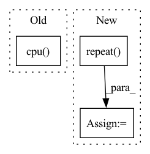

Pattern ID :27665
Before Change
def forward(self, user, item):
user = torch.from_numpy(self.interaction_matrix[user.cpu()].todense()).to(self.device)
item = torch.from_numpy(self.interaction_matrix[:, item.cpu() ].todense()).to(self.device).t()
user = self.user_linear(user)
item = self.item_linear(item)
After Change
// Following lines construct tensor of shape [B,n_users] using the tensor of shape [B,H]
col_indices = self.history_user_id[item].flatten()
row_indices = torch.arange(item.shape[0]).to(self.device).repeat_interleave(self.history_user_id.shape[1], dim=0)
matrix_01 = torch.zeros(1).to(self.device).repeat( item.shape[0], self.n_users)
matrix_01.index_put_((row_indices, col_indices), self.history_user_value[item].flatten())
item = self.item_linear(matrix_01)
user = self.user_fc_layers(user)
item = self.item_fc_layers(item)
user = F.normalize(user, p=2, dim=1) // after normalize the vector, cosine distance reduced to dot product.
item = F.normalize(item, p=2, dim=1)
vector = torch.mul(user, item).sum(dim=1)
vector = torch.max(vector, self.min_y_hat) // restrict the result to [0, 1].In pattern: SUPERPATTERN
Frequency: 3
Non-data size: 3
Instances Fragment ID: 82100260
Project Name: rucaibox/recbole
Commit Name: a63051c31f6cacc489710809995b2610a52b96d6
Time: 2020-09-17
Author: 893833413@qq.com
File Name: recbox/model/general_recommender/dmf.py
M Class Name: DMF
N Class Name: DMF
M Method Name: forward(3)
N Method Name: forward(3)
M Parent Class: GeneralRecommender
N Parent Class: GeneralRecommender
M File Name: recbox/model/general_recommender/dmf.py
N File Name: recbox/model/general_recommender/dmf.py
M Start Line: 73
M End Line: 82
N Start Line: 90
N End Line: 106
Before Change
batch_size, seq_len, vocab_size = logits.size()
mask_positions_after_reshaped = []
for batch, mask_pos in enumerate(mask_positions.detach().cpu() .numpy().tolist()):
for pos in mask_pos:
mask_positions_after_reshaped.append(batch * seq_len + pos)
After Change
loss = None
for single_logits, single_sub_mask_labels, single_mask_positions in zip(logits, sub_mask_labels, mask_positions):
single_mask_logits = single_logits[single_mask_positions] // (mask_label_num, vocab_size)
single_mask_logits = single_mask_logits.repeat( len(single_sub_mask_labels), 1, 1) // (sub_label_num, mask_label_num, vocab_size)
single_mask_logits = single_mask_logits.reshape(-1, vocab_size) // (sub_label_num * mask_label_num, vocab_size)
single_sub_mask_labels = torch.LongTensor(single_sub_mask_labels).to(device) // (sub_label_num, mask_label_num)
single_sub_mask_labels = single_sub_mask_labels.reshape(-1, 1).squeeze() // (sub_label_num * mask_label_num)
cur_loss = cross_entropy_criterion(single_mask_logits, single_sub_mask_labels)
cur_loss = cur_loss / len(single_sub_mask_labels)
if not loss:
loss = cur_loss
else:
loss += cur_loss
loss = loss / batch_size // (1,)
return loss / masked_lm_scale
Fragment ID: 82100246
Project Name: harderthenharder/transformers_tasks
Commit Name: bf825bb22c43795f1e3a08cf8969ddc613051e76
Time: 2022-11-30
Author: pankeyu@pankeyus-MacBook-Pro.local
File Name: prompt_tasks/p-tuning/utils.py
M Class Name: AnonimousClass
N Class Name: AnonimousClass
M Method Name: mlm_loss(6)
N Method Name: mlm_loss(6)
M Parent Class:
N Parent Class:
M File Name: prompt_tasks/p-tuning/utils.py
N File Name: prompt_tasks/p-tuning/utils.py
M Start Line: 204
M End Line: 212
N Start Line: 190
N End Line: 203
Before Change
return self.forward(user, item)
def get_user_embedding(self, user):
user = torch.from_numpy(self.interaction_matrix[user.cpu() ].todense()).to(self.device)
user = self.user_linear(user)
user = self.user_fc_layers(user)
return userAfter Change
col_indices = self.history_item_id[user].flatten()
row_indices = torch.arange(user.shape[0]).to(self.device).repeat_interleave(self.history_item_id.shape[1],
dim=0)
matrix_01 = torch.zeros(1).to(self.device).repeat( user.shape[0], self.n_items)
matrix_01.index_put_((row_indices, col_indices), self.history_item_value[user].flatten())
user = self.user_linear(matrix_01)
return user Fragment ID: 82100254
Project Name: rucaibox/recbole
Commit Name: a63051c31f6cacc489710809995b2610a52b96d6
Time: 2020-09-17
Author: 893833413@qq.com
File Name: recbox/model/general_recommender/dmf.py
M Class Name: DMF
N Class Name: DMF
M Method Name: get_user_embedding(2)
N Method Name: get_user_embedding(2)
M Parent Class: GeneralRecommender
N Parent Class: GeneralRecommender
M File Name: recbox/model/general_recommender/dmf.py
N File Name: recbox/model/general_recommender/dmf.py
M Start Line: 107
M End Line: 109
N Start Line: 141
N End Line: 146